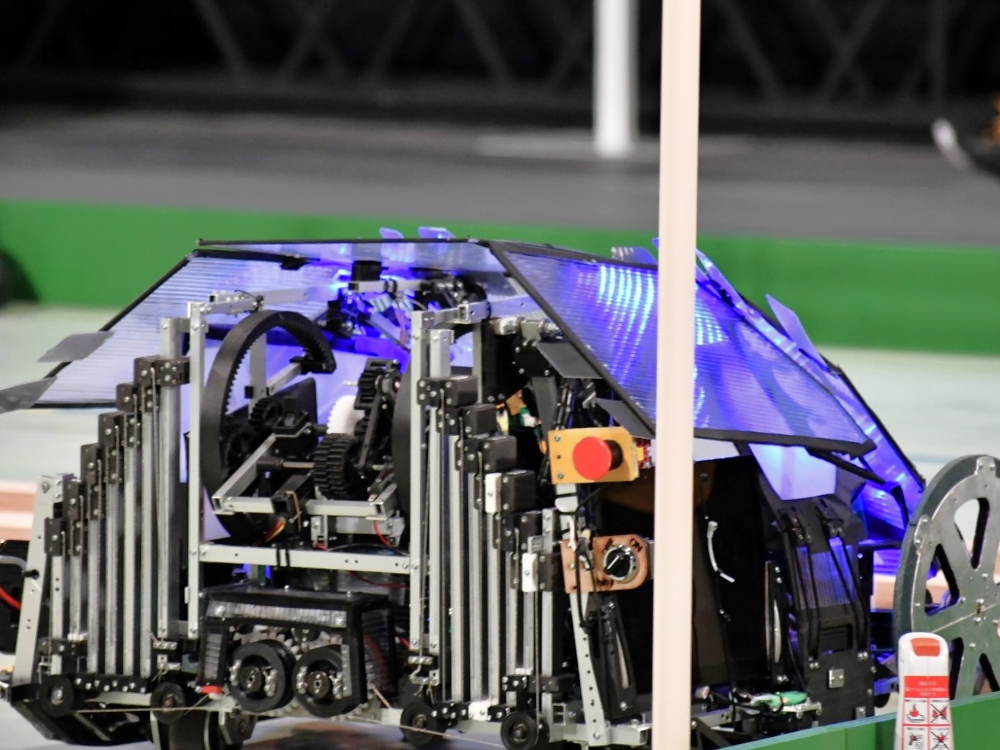
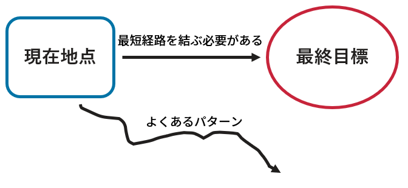
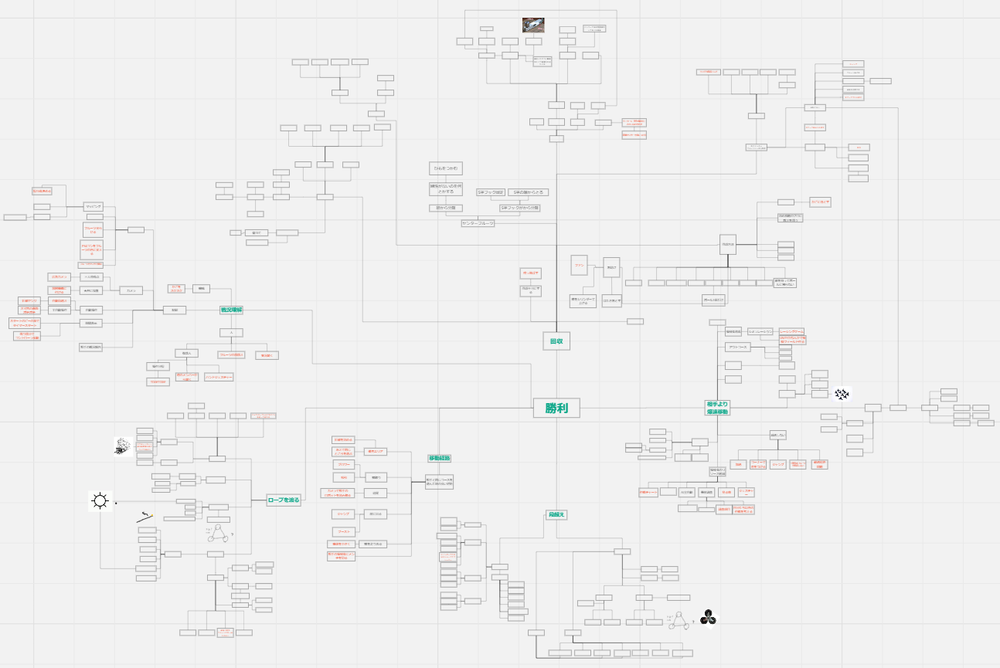
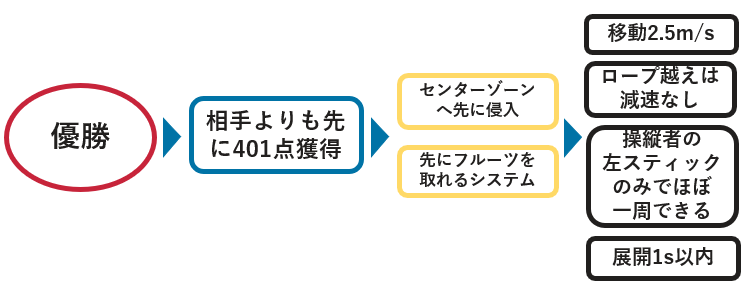
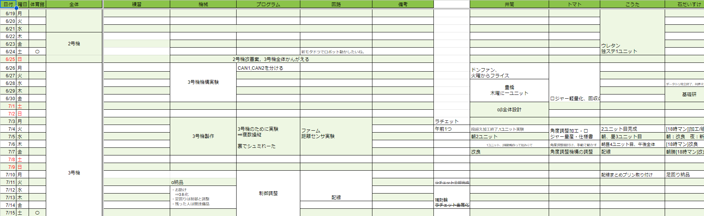
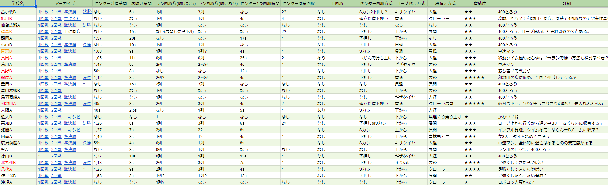
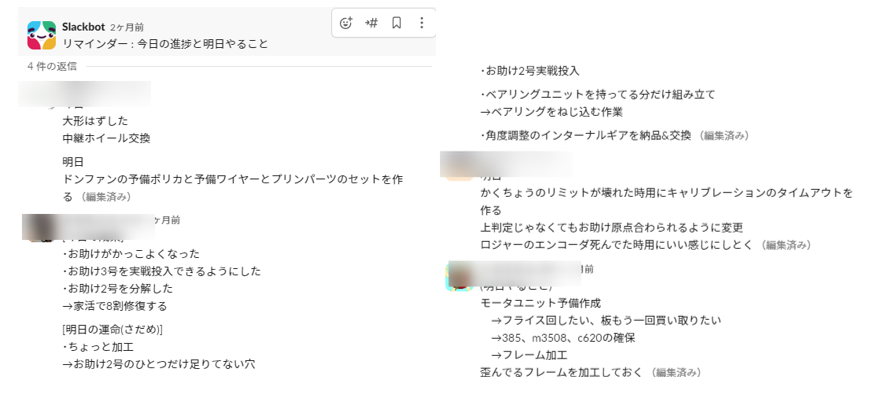

高専ロボコン2023
優勝チームマネジメント

1.最重要視してきたこと
最終目標を据えたうえで、現状地点を正確に把握することを重要視してきました。そのうえで、どのような手順、または小目標を決めることでプロジェクトとして目標までたどり着けるかを常に考え続けました。

また、チームメイト全員が
・上記の事を常に考えられる環境
・開発スピード向上を目的とした環境
を整備することで全国のどの高専よりも最終目標である優勝に近づけるロボットを製作してきました。
2.大会参加概要
アイデア対決・全国高等専門学校ロボットコンテスト2023に出場し、地区大会アイデア賞・全国優勝を獲得しました。
2-1.ルール概要
テーマ名は「もぎもぎ・フルーツGOラウンド」です。1 VS 1の対決で相手よりも多くの点数を獲得したチームが勝利します。フィールド内には得点源となる「フルーツ」が高所に合計800点分設置されています。フィールド内には段差、ロープといった障害物が設置されており一方通行の道となっています。さらに、フィールド全体は共有フィールドとなっており、自分の位置、相手の位置、得点状況、フィールド状況等様々な要素によって戦略を決定する高度なルールとなっています。
2-2.ロボット概要
私たちは、
・全国最速移動タイム
・フルーツの取り合いを制するアーム
を売りに出場しました。全国区では高得点ゾーンへ平均1分程度の時間で移動していたのに対し、私たちは最速30秒で到達できるロボットでした。また、自由度の高いアームを採用することで相手が高得点ゾーンには侵入させないようにブロックしつつ、フルーツを収穫することができるシステムにしました。

熱戦の決勝戦
3.リーダーとしてやった来たこと
チーム活動の最も強い点は多人数活動によるプロジェクトの効率化です。私は、その強い点を活かすために、「チームメイトの視野を広げる」「作業の効率化」に重点を置きつつ、ルールに対してチームとして何をすれば優勝に近づけるかを考え続けました。
3-1.アイデア出し
人間競技による競技理解・ニーズステートメントの整理・ブレインストーミング・KJ法・強制連想法・プロトタイプの製作・システム樹形図の作成を行い、ルールに対してどのようなアプローチが存在するか整理しました。

システム樹形図(参照元)
アイデア出し終了後、チームコンセプトを設定し、それを達成するための小目標及び設計要件を設定しました。アイデア出しによってできた樹形図を基に私がコンセプトを設定し、その後チームメイトと相談し、細かい要素まで落とし込みました。

目標に対する設計要件
3-2.共有事項データの集約
スケジュール・敵情報・仕様書・キーコンフィグ・引継ぎ資料等様々な情報を一つのスプレッドシートにまとめることで、全員がすぐに確認できるようにしました。また、スケジュールでは個人スケジュールも作成しており、全体スケジュールから個人スケジュールに落とし込んだり、他人のタスクと干渉したりしないようなど配慮しながら作成したりすることで、活動の効率化を図りました。

共有データ(参照元)
他にも、敵情報に関して、全国出場チームの各情報及び試合データのすべてを添付することでチームメイトが現在の状況を把握しやすくしました。

敵情報
3-3.SlackによるPDCAサイクルの高速化
毎日機械・制御・回路のそれぞれの分野担当の人、全員に「今日の進捗」「明日やること」を記入してもらい帰宅時に1人ずつ詳細を聞きに行きました。これにより、チームの状況を正確に把握することができるため、チーム全員にタスクを適切に分散、問題点の迅速な情報伝達ができました。高スパンでPDCAを回すことができたため半年間で800mm四方のロボットを11台作ることができました。

Slackでの報告
4.競技の様子
決勝戦の大阪公大VS熊本八代についての動画を添付します(5:57:31-)。
赤コートの大阪公大が私の所属していたチームです。
※スマートフォンで見ると時間がずれている場合があります。
く